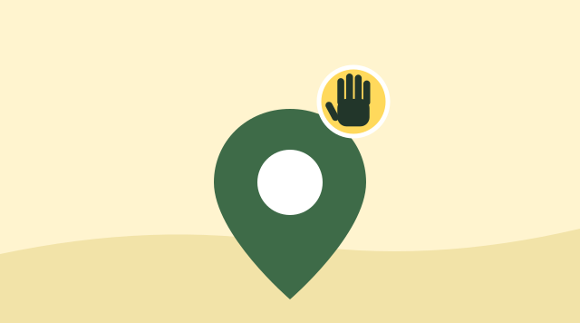
마이 맨 위에서 손 들기를 켜면 지도의 내 핀에 ✋ 표시가 올라가요. "먼저 말 걸어도 돼요"라는 뜻이에요. 14일 뒤 저절로 내려가고, 언제든 끌 수 있어요.
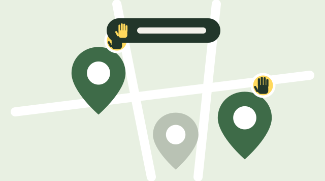
지도에서 '친구 찾는 이웃'을 누르면 손 든 이웃만 보여요. 핀을 눌러 프로필을 보고 친구 신청을 보내요. 내 위치는 정확한 주소가 아니라 동네 근처로만 보여요.
신청이 오면 앱을 열 때 알려 드려요. 수락하면 뜨친이 되고 둘만의 대화방이 열려요. 인사말을 골라 보내기만 해도 돼요.
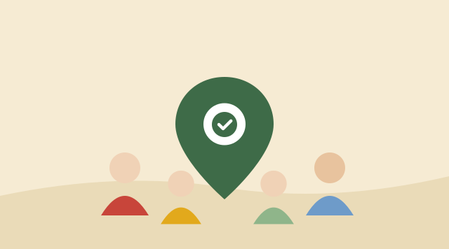
커뮤니티의 모임 탭과 지도에서 가까운 모임을 볼 수 있어요. [참여]를 누르면 모임 대화방에 들어가요. 완성작품 인증이 없어도 참여할 수 있어요.
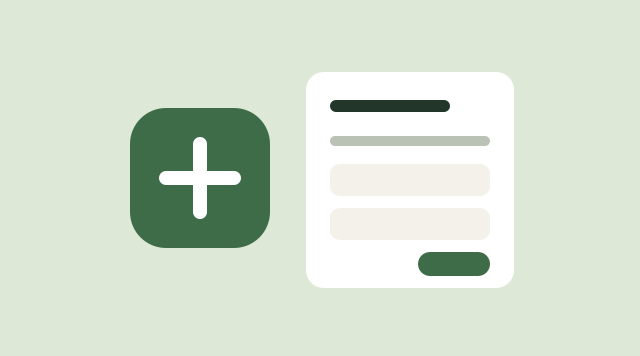
완성작품 인증이 1개 있으면 ＋ 버튼에서 모임을 열 수 있어요. 날짜, 장소, 인원, 함께 뜰 기법을 적으면 끝이에요.
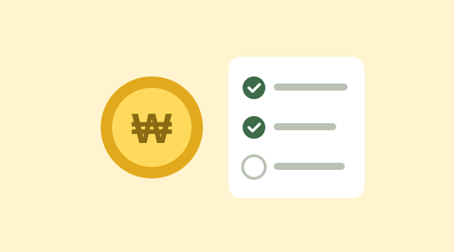
대관비처럼 참가비가 있으면 금액, 어디에 쓰는지, 환불 안내를 적어요. 신청을 받고 여는 분이 확정하는 방식으로 할 수 있어요. 돈은 앱에서 오가지 않고, 확정된 분들에게 대화방에서 직접 안내해요.
모임이 끝나면 사진과 함께 후기를 올릴 수 있어요. 다음에 올 이웃에게 큰 도움이 돼요.
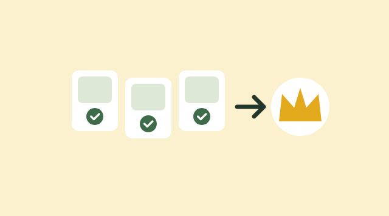
가장 높은 전문(5단계) 기법이 들어간 완성작품 인증이 3개 모이면 신청할 수 있어요. 마이 › 설정 › 작가 신청을 누르면 운영진이 확인한 뒤 작가로 바꿔 드려요.
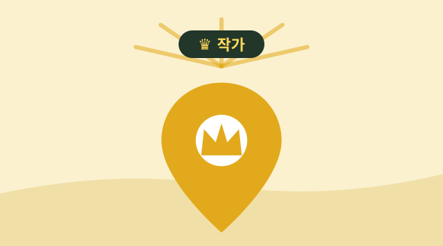
지도에 황금색 작가 핀으로, 멀리서도 보여요. 내 작가 화면에 대표작 사진과 링크 3개를 걸 수 있고, 이웃이 팔로우하거나 문의를 보낼 수 있어요.
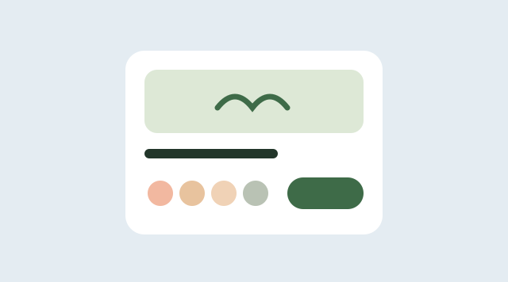
수업 내용, 날짜, 인원, 수강료를 적어 클래스를 열어요. 신청이 오면 확정하고, 확정된 분들과 클래스 대화방이 열려요. 수강료는 대화방에서 직접 안내해요.
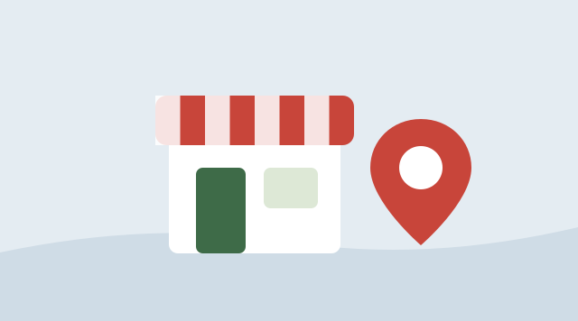
마이 › 설정 › 우리 가게 등록 신청에서 상호, 주소, 사업자등록증을 올려요. 확인되면 지도에 가게 핀이 생겨요.
새 실 입고, 할인, 휴무 같은 소식을 올려요. 가게를 팔로우한 이웃에게 알림이 가요.
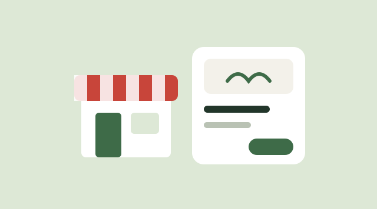
가게 화면의 [클래스 열기]에서 수업을 만들어요. 신청을 받고 확정하면 클래스 대화방이 열려요.
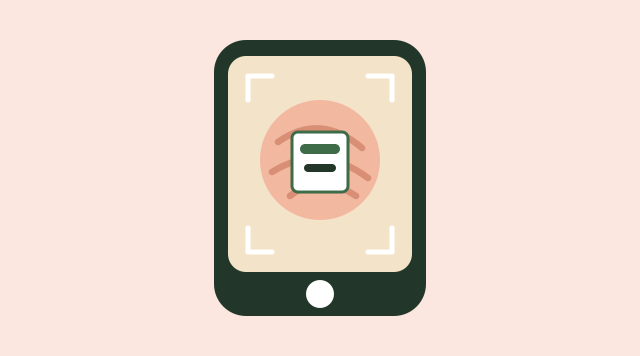
실 전체 한 장, 띠지 뒷면 한 장을 찍으면 이름, 색, 무게를 읽어 실함에 담아요. 틀린 곳은 눌러서 고치면 돼요. 내 실함은 다른 회원에게 보이지 않아요.
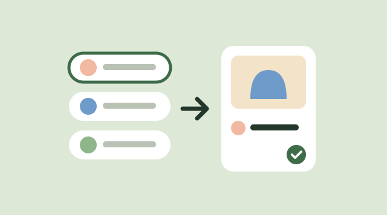
완성작품 인증에서 내 실함의 실을 누르면 이름과 색이 바로 들어가요. 쓴 만큼 남은 볼 수가 저절로 줄어요.
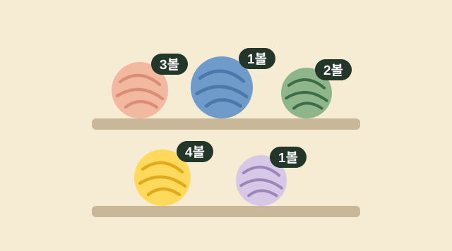
남은 실과 다 쓴 실을 나눠 볼 수 있어요. 나눠 주거나 잃어버린 실은 남은 볼 수를 직접 고치면 돼요.